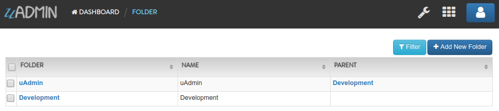
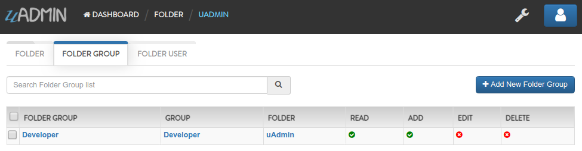
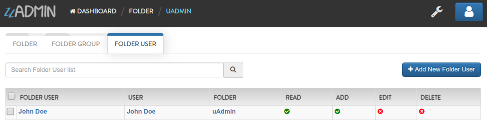

Document System Tutorial Part 6 - Register Inlines and Drop Down List¶
In this part, we will discuss about register inlines and schema list modifier based on the document list filter that checks the admin status of the user. If it is not an admin, what are the models that user can access to.
Inlines is where we keep all registered models’ inlines. It allows you to merge a parent model to a submodel where the foreign key(s) are specified.
Why do we use Register Inlines? We use them to show that the field of a model is related to another model as long as there is a foreign key specified.
Format:
uadmin.RegisterInlines(
/folder_name/./struct_name of a parent model/{},
map[string]string{
"/sub_model name/": "/parent_model name/ID",
}
)
Now let’s apply it in the main.go. Copy the codes below and paste it after the uadmin.Register function.
uadmin.RegisterInlines(
models.Folder{},
map[string]string{
"foldergroup": "FolderID",
"folderuser": "FolderID",
},
)
models.Folder{} is called because the FolderGroup and FolderUser models have foreign key to this model. foldergroup and folderuser are the URL of those models and they are initialized to the FolderID in order to create inlines to the Folder model.
Now let’s run an application. From the Document System Dashboard, click “FOLDERS”.

Click any of the existing records that you have in this model (e.g. uAdmin).
As you can see, there are two inlines which are “FOLDER GROUP” and “FOLDER USER”.

Click on “FOLDER GROUP”. Inside it, there is a record named “Developer” because this folder group links to the “uAdmin” folder.
Click on “FOLDER USER”. Inside it, there is a record named “John Doe” because this folder user links to the “uAdmin” folder.
